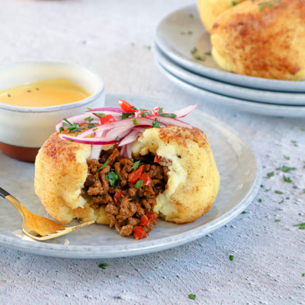

Papa Rellena

Description
Papa rellena, translating to "stuffed potato," is delicious comfort food, combining mashed potatoes with ground beef. A seasoned ground beef filling, similar to an empanada filling, is enveloped in a layer of mashed potatoes, which is then formed into an oblong oval shape and deep-fried until it's golden brown and crispy. Kids love this meal, especially with ketchup on the side. Here's what you need.
Ingredients
- For the Potatoes:
- 3 pounds yellow potatoes (or about 6 medium potatoes)
- Kosher salt, to taste
- Pepper, to taste
- 1 large egg
- For the Filling:
- 1 large egg
- 1 tablespoon vegetable oil
- 1/2 cup finely chopped onion
- 2 cloves garlic, minced
- 1 tablespoon minced aji pepper, aji pepper paste, or minced jalapeno to taste
- 1 teaspoon ground cumin
- 1/2 teaspoon paprika
- 3/4 pound ground beef
- 3/4 cup beef broth
- 1/3 cup raisins
- 1/3 cup chopped green olives, optional
- For Assembling and Frying:
- 1/2 cup all-purpose flour, for dusting, or more as needed
- Vegetable oil, for frying
Steps
- Make the Mashed Potatoes
- Gather the ingredients.
- Bring a large pot of salted water to a boil. Cook the unpeeled potatoes until they are tender when pierced with a fork, about 25 minutes.
- Once the potatoes are cooked, drain them in a colander.
- When they are cool enough to handle, peel and mash the potatoes thoroughly (or pass them through a potato ricer).
- Season the mashed potatoes with salt and pepper to taste. Chill the potatoes uncovered for several hours, or overnight.
- Once the potatoes are very cold, stir the egg into the mashed potatoes until well mixed.
- Make the Filling
- Cook the egg in boiling water until hard-boiled and set aside.
- Heat the vegetable oil in a skillet. Add the onions, garlic, and aji pepper and cook until soft and fragrant.
- Add the cumin and paprika and cook 2 minutes more, stirring.
- Add the ground beef and cook until browned.
- Add the beef broth and the raisins and simmer for 10 to 15 minutes more, or until most of the liquid is gone.
- Stir in the green olives, if using.
- Season the mixture with salt and pepper to taste. Remove from the heat and let cool.
- Peel the hard-boiled egg and chop it into about 6 pieces.
- Assemble and Cook
- With floured hands, place about 1/4 cup of mashed potatoes in one hand, and make a well in the center.
- Fill the well with 1 to 2 tablespoons of the beef mixture and a piece of hard-boiled egg.
- Mold the potatoes around the beef, adding more potato if necessary to fully enclose the filling. Shape into an oblong oval with slightly pointy ends, about the size of a medium potato.
- Repeat with the rest of the ingredients; you should be able to make 6 croquettes. Coat each papa rellena generously with flour.
- In a deep skillet or deep-fat fryer, heat 2 inches of oil to 360 F. Set the oven to 200 F.
- Fry the potatoes in batches until they are golden brown.
- Drain them on a plate lined with paper towels. Keep the papa rellena warm in the oven until ready to serve.